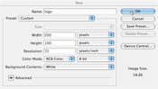

Creating a New Document:
When creating a document, it is important to know what size your final logo will be. Although these things can be changed later, it's easier to change the image size once. For an example, I will create a logo that is 200 pixels wide by 100 pixels high. If you would like to make an image that is taller or wider, feel free to make the necessary changes.
To make a new document, go to the top of the page and click "File." Then click "new document." When the window opens up, change the drop-down sizes to pixels. 
For logos that will be used for the Web, change the resolution to 72 and the mode to RGB. For logos that will be used for print, change the resolution to 300 and the mode to CMYK. This will make the logo look a lot more appealing when printed.
If you would like your image to have a transparent background, go to background on the bottom and change it to "transparent." If you decide later to have a transparent background for your logo, you can delete the background layer.
Once you have changed all of the settings and titled your document, hit OK and begin your project.